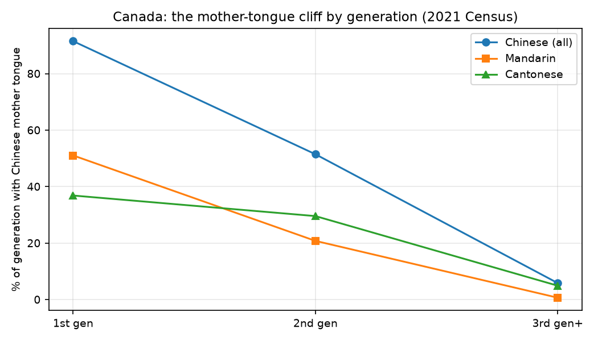
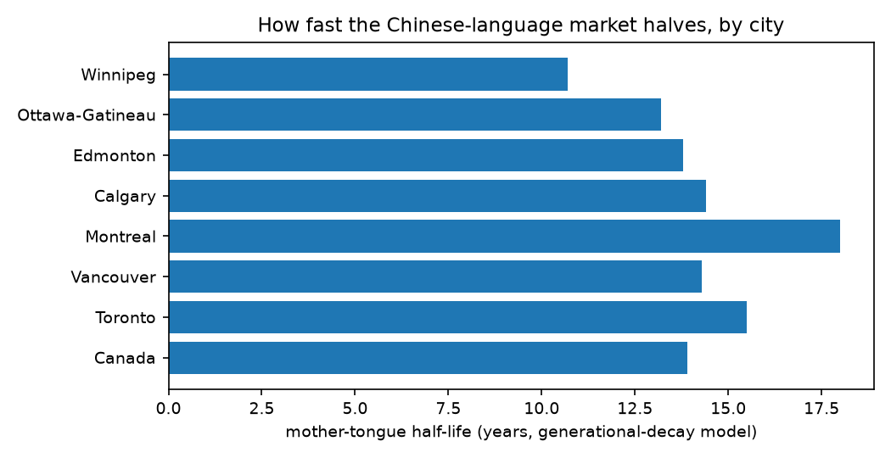
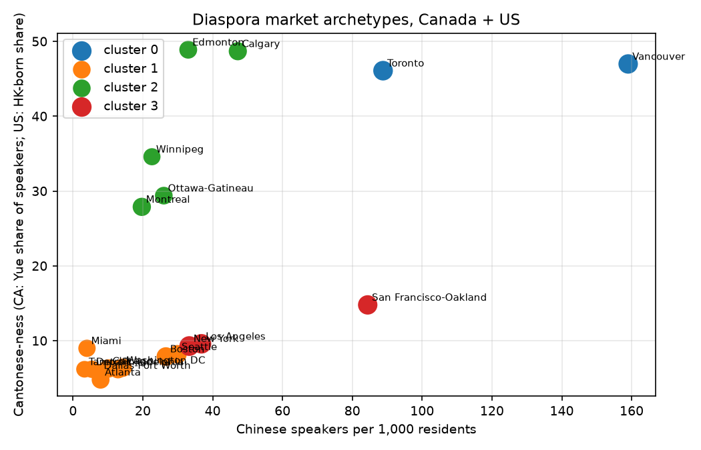

Musing with Mike · Build · 2026-10-04 · How fast the Chinese-language market decays — and what refills it.
Pick a city and a language. The line is the mother-tongue population from 2021 to 2051 if today's generational transmission rates hold and net new Chinese-mother-tongue immigration runs at the chosen level (15k / 30k / 45k people per year into Canada, split by the city's 2021 share). It's an accounting model, not a prophecy — but the drain rate is measured, not assumed.


